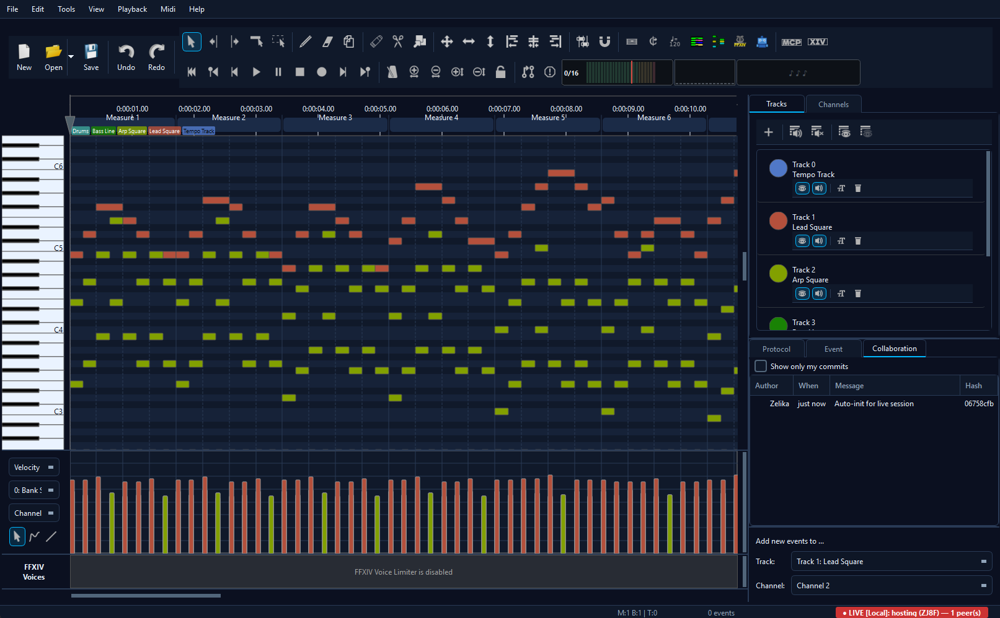
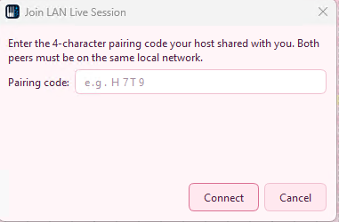
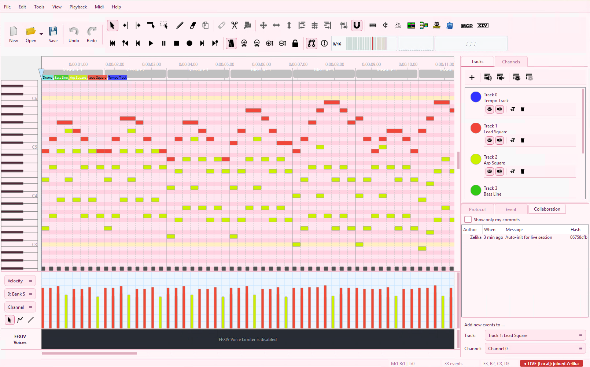
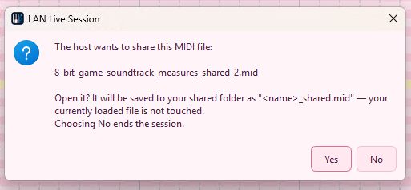
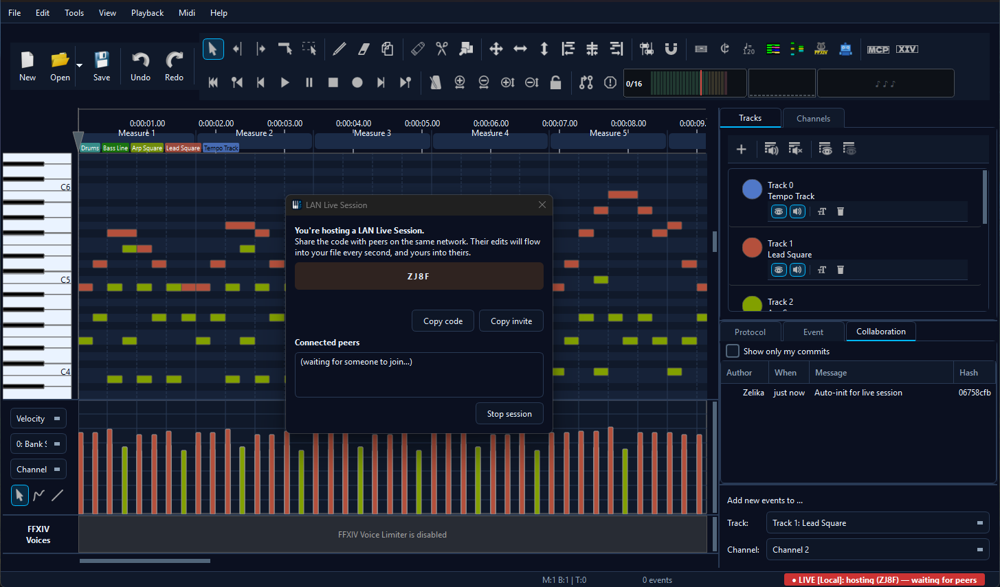

🏠 LAN Live Session
Two or more PCs on the same network can co-edit a MIDI file in realtime. UDP multicast handles peer discovery, TCP carries the data, and the host's file auto-transfers to anyone who joins. Edits flow in every direction every 200 ms.
When you click Start LAN Live Session a mode picker asks Edit (everyone can edit, the behaviour described here) or Show (one peer at a time holds the hat, everyone else watches). See the Show Mode page for the hat-passing + follow-the-host details. The in-session chat panel appears in the lower sidebar in both modes.
Two screen captures recorded simultaneously on a real LAN session. Notes typed on either side land on the other within a tick.
LAN sessions don't touch the internet at all - the host generates and verifies the pairing code on its own. For sessions across the internet, see WAN Live Session →
When to use it
LAN Live Session is the right pick when everyone's on the same network - band rehearsal room, office, home Wi-Fi, classroom, even a VPN that forwards multicast. No internet required, no third-party server in the path, lowest possible latency. The host's PC acts as the central hub (host-star topology) and accepts up to 8 simultaneous joiners.
For users on different networks (across the internet), pick WAN Live Session instead - same UX, same features, just routed via WebRTC + a tiny rendezvous worker.
Quick start
- Host opens a MIDI file, picks Collab → Start LAN Live Session…. A 4-character pairing code appears.
- Each joiner picks Collab → Join LAN Live Session…. The host shows up in the discovery list automatically.
- Joiner either double-clicks the host entry or types the 4-character code if discovery is blocked on their network.
- The host's file transfers automatically. The status bar on both
sides flips to
LIVE [Local] · N peer(s)and edits start flowing.
Hosting

The Start dialog gives you a 4-character code (excluding ambiguous letters and digits like I, L, O, 0, 1) plus two buttons:
- Copy code - copies just the four characters, e.g.
K7XP. For voice / in-person sharing. - Copy invite - copies a small prepared sentence with the code embedded, ready to drop into chat.
The dialog also shows a peer list that grows live as joiners arrive.
The status bar in the main window mirrors the count:
LIVE [Local] · 1 peer when the first joiner is in,
2 peers next, and so on.
By default, hosting starts with the Work on a copy safety net
turned on. Your file is duplicated to
Documents/MidiEditor_AI/shared/<name>_shared.mid and the
editor switches to that copy. Your original on disk stays untouched.
Joining


The Join dialog scans the local network via UDP multicast and lists every host that's currently sharing. Double-click the entry, or type the 4-character code if you got it via voice / chat.
Some networks (managed switches, hotel Wi-Fi, certain VPN configurations) block multicast. If the host doesn't appear in the list, expand Connect manually, paste the host's IP and port shown in the host's Start dialog, and the join goes direct via TCP.

Documents/MidiEditor_AI/shared/.
The first time you join a session you confirm the file transfer in a
modal. The host's .mid arrives as
<name>_shared.mid next to the existing shared
folder. From here on the editor edits the shared copy - if you had
your own version of the file open, it stays untouched on disk.
What's synced

- Note events (note-on, note-off, durations, velocities, positions).
- Controller events (CCs, pitch bend, channel/key pressure, program changes).
- Meta events (tempo, time signature, key signature, text, track name).
- File length (end-tick) - insertions and deletions of empty measures propagate cleanly in both directions.
- Track structure - new tracks created by one peer (e.g. via Split Channels) auto-extend on receivers.
What's deliberately not synced:
- Selection state - each peer keeps their own selection.
- View / scroll position - each peer scrolls their own matrix.
- Undo history - each peer's undo stack is per-PC, not shared. The collab history (right-side panel) shows the merged log instead.
- Mute / solo state - local-only, doesn't bleed across peers.
Returning peers & reconciliation
Live sessions are tolerant of leave-and-rejoin. If a peer drops (Wi-Fi hiccup, app restart) and rejoins the same session, MidiEditor compares the local commit history against the host's and either fast-forwards the rejoiner (if their state is a subset of the host's) or surfaces a diverged-history dialog where the host can pick which edits to accept.
For most short interruptions you'll never see a dialog - the returning peer just catches up. The diverged dialog only appears when the rejoining peer made offline edits that the host doesn't have.
Review mode (host approves edits)
By default, edits from any peer apply on every other peer immediately. For situations where the host wants veto power - teaching scenario, testing an AI agent's output, untrusted joiner - toggle Collab → Review mode. Incoming hunks queue up instead of applying; the host cherry-picks via the Review dialog (same UI as the async PR review) before they take effect.
Leaving cleanly
Pick Collab → Leave Live Session on either side.
Everyone else sees the peer count tick down and the editor returns to
solo mode. The shared file in
Documents/MidiEditor_AI/shared/ stays on disk so you can
re-open it later or save a Save-As copy back to your real working
location. Originals (the file you started from before hosting / joining)
stay untouched if work-on-copy was on.
Troubleshooting
"Host can't see me" / "Connection refused"
Same root cause as the WAN firewall issue: Windows Defender (or third-party
antivirus) silently blocks the app's UDP multicast announcements and TCP
sockets without a popup prompt. Add MidiEditorAI.exe to the
firewall allow-list for both Private and Public:
- Windows Security → Firewall & network protection → Allow an app through firewall
- Add
MidiEditorAI.exe, check both Private + Public - If you have third-party AV, add an exception there too
See the WAN troubleshooting page for the full walkthrough - the fix is identical.
"Host doesn't appear in the discovery list"
- Multicast disabled on your LAN. Some routers / managed switches block multicast. Use the Manual IP fallback in the Join dialog - host shows its IP in the LIVE indicator.
- Different network segments. Wi-Fi guest network + wired LAN are usually isolated. Both PCs must be on the same SSID / same VLAN.
- VPN active. A VPN can re-route multicast through a tunnel that doesn't reach the local LAN. Pause the VPN or use Manual IP.
- Windows network type set to "Public". Windows blocks discovery on Public networks by default. Set to Private in network settings, or add the app to the firewall exception list under both profiles.
"Ghost notes after sync"
Symptom: the file plays notes that aren't visible in the editor, or
the end-tick keeps resetting after a delete-measures operation. This
was a sync-loop fixed in v1.7.0 - the receiver now removes events
past a shrunken end-tick atomically with the file-length change. If
you ever see this on v1.7.0 or later, please file an issue with the
midieditor_ai.log that's saved next to the executable.
"Live sync paused - last edit was too large to send"
Single hunks frame exceeded the 16 MiB negotiated max-message-size on the wire. Save the file (Ctrl+S), then split your edit into smaller chunks (e.g. apply the same tool twice on half the events each time). The status message clears as soon as the next sync tick has a fits-in-budget diff.
Other
- "Couldn't write the received MIDI to %1" - antivirus quarantined the shared-folder. Check Documents/MidiEditor_AI/shared/ exists and is writable.
- Both PCs disconnect after ~30 s - one side has heartbeat disabled or a packet-filter that drops idle TCP. Check both PCs' firewalls.